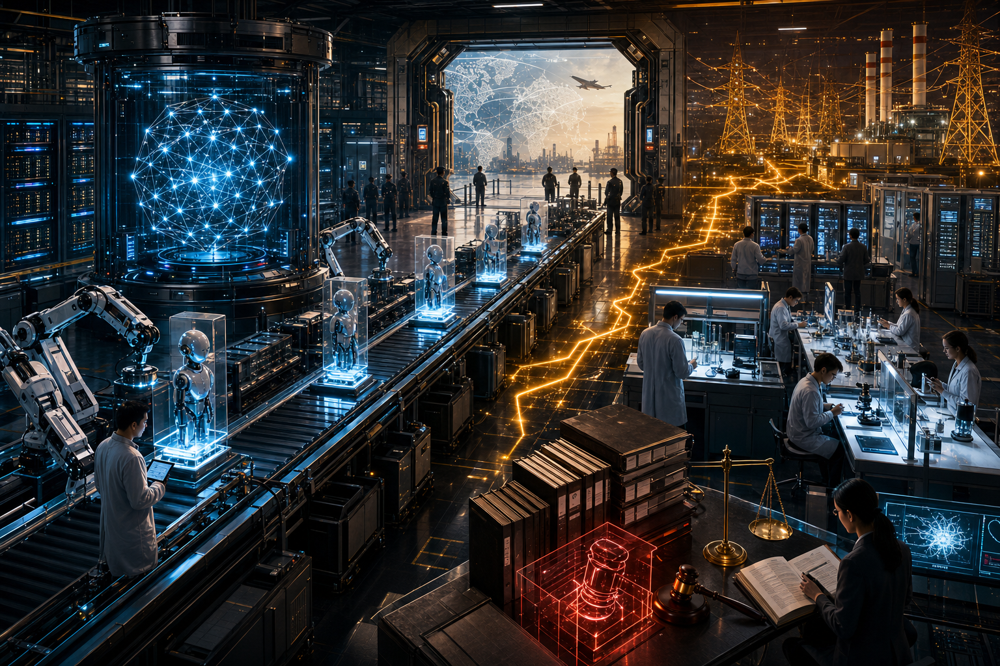

今日主線
Claude Sonnet 5 主打低成本 agent，模型戰轉向可持續執行
Anthropic 推出 Claude Sonnet 5，TechCrunch 將它定位為更便宜的 agent 執行方式。這延續昨天的 AI API 帳單議題，但新角度是價格不只影響採購，也決定 agent 能不能長時間跑在企業流程裡。
今天的訊號不再只是誰發表更強模型，而是誰能把 agent 做便宜、把模型塞進科學與雲端工作台、把電力與法規也接上生產線。

Anthropic 推出 Claude Sonnet 5，TechCrunch 將它定位為更便宜的 agent 執行方式。這延續昨天的 AI API 帳單議題，但新角度是價格不只影響採購，也決定 agent 能不能長時間跑在企業流程裡。
相較前幾天 Mythos 與 GPT-5.6 的可信夥伴安排，最新增量是 Reuters 報導美國將解除 Anthropic Fable export controls；frontier model 管制從封鎖、配給走向談判後放行。
昨天的重點是 Supermicro 台灣辦公室遭搜索；今天的新進展是報導指搜索擴大到 Supermicro 與兩家供應鏈夥伴的九個地點，並有六人被傳喚。
Bloom Energy 與 Brookfield 擴大 AI infrastructure power partnership，框架上看 250 億美元；AI 資料中心的瓶頸正在從 GPU 與機房延伸到可快速部署的電力供應。
AWS 據報投入 10 億美元建立 embedded AI engineers 新單位。這不是單純模型或雲端產品升級，而是把 AI 交付方式推向顧問式、駐場式工程團隊。
Claude models 據報在 Microsoft Foundry via Azure 上線，並與 NVIDIA Blackwell 硬體部署相連；Anthropic 不只賣模型，也在爭奪企業雲端入口與部署通道。
Anthropic 發表 Claude Science AI Workbench，並有 Basecamp Research 將 EDEN 的抗生素與疫苗設計模型帶入 Claude Science；AI 科學工具正從聊天助手走向研究工作台。
Winamp 旗下 Jamendo 繼 NVIDIA 案後再對 Suno 提起 AI training copyright lawsuit，音樂平台把訓練資料爭議從晶片公司延伸到生成音樂服務。